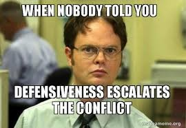
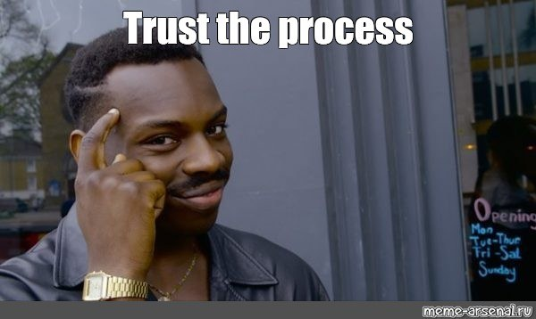

Tell mediation and arbitration apart, and know where each fits
3
Use the styles and moves of effective mediators
4
Mediate between colleagues as a manager, rather than simply deciding who is right
SESSION 5 · ON YOUR PHONES
When two colleagues can’t settle, what do you do?
QR CODE IN THE SESSION
0answers in
We’ll come back to your answers at the end of the session
DEMO DATA
SESSION 5 · THIRD PARTIES
When is third-party involvement necessary?
When emotions overwhelm negotiators
When there is poor communication between the parties
When there is mistrust, or negative perceptions of the other party
When the parties are unable to implement actions that will help defuse the conflict: they don’t have the process knowledge
When the parties are unable to come to a settlement on their own: they don’t have the substantive knowledge

SESSION 5 · IN THE NEWS
When a small claim goes all the way to court
A judge in Washington sued the family that ran his dry cleaner over a lost pair of trousers, at first for $67 million
The owners made three offers to settle, the last for $12,000. He turned all of them down
In June 2007, the court ruled for the cleaners and ordered him to pay their court costs. When emotions overwhelm a negotiator, even a small claim can end up in court
Judge rules in favour of dry cleaner over lost trousersAP Archive
SESSION 5 · THIRD PARTIES
The dispute resolution spectrum
Preventive
DISPUTE
Negotiated
Facilitated
Fact-finding
Advisory
Imposed
VoluntaryInvoluntary
SESSION 5 · THIRD PARTIES
Types of third-party dispute resolution
OmbudspersonAn employee whose role is to hear concerns, who may be an explicit advocate of the employee
MediationA third party whose purpose is to help both parties reach a mutually acceptable solution on how to resolve the conflict: non-binding, and internal or external to the organisation
ArbitrationA third party from outside the organisation who hears the dispute and issues a binding resolution or award
LitigationThe judgment, order or decree is made in court, determined by a judicial decision
Satisfaction with the process and the outcome is highest with mediation
SESSION 5 · ARBITRATION
What an arbitration hearing can do to a relationship
In 2017, a panel of arbitrators chose the New York Yankees’ figure of $3 million over the $5 million their pitcher, Dellin Betances, had asked for
The team’s president then said in public that Betances had been used by his agents. Betances: “They take me in a room and they trash me for about an hour and a half”
The team won the hearing, and still had to work with the player it had argued against
Dellin Betances is not happy with the YankeesSNY
SESSION 5 · MEDIATION
Mediator roles
Opener of communication channels
Legitimiser
Process facilitator
Resource expander
Problem explorer
Agent of reality
Scapegoat
Leader
SESSION 5 · MEDIATION
Mediator styles
Facilitative“Orchestrators”
Evaluative“Dealmakers”
Transformative“Relationship builders”
A continuum?
SESSION 5 · MEDIATION
The mediation process
1
Establish the mediator’s acceptability with the parties
2
Opening statements
3
Information gathering (which can happen before the formal mediation)
4
Separate the parties into caucuses (?)
5
Search for solutions (create doubt!)
6
Uncover a range of settlement (or not!)
SESSION 5 · DIRTY LAUNDRY
Exercise: Dirty Laundry
Dirty Laundry is a dispute between two people over a small claim
Team up with the people who have the same number as you
You have 10 minutes to prepare, and 25 minutes to discuss and come to an agreement
Record your settlement on your phones
Plaintiff
Defendant
Mediator
Three roles, one brief each. Keep your brief to yourself.
SESSION 5 · DIRTY LAUNDRY
Record your settlement
What participants see
0groups recorded
QR CODE IN THE SESSION
Each of you records the settlement on your own phone
DEMO DATA
SESSION 5 · DEBRIEF
Every group’s settlement
Plaintiffs and defendants: what are your concerns, your interests? Did you find any suitable settlement options?
DEMO DATA
SESSION 5 · DEBRIEF
Which style did the mediators use?
Mediators: what style and process did you use?
DEMO DATA
SESSION 5 · IN THE NEWS
Who Britain calls when a workplace dispute won’t settle
Acas, Britain’s Advisory, Conciliation and Arbitration Service, is independent and impartial: it acts for neither side
Its help is voluntary, free and confidential, and it reports success in nine disputes out of ten
In 2023, Royal Mail’s postal workers backed a deal reached in talks at Acas by 75%. Both sides invited the third party in
What is Acas’s role in strikes, and what does Acas do?Acas
SESSION 5 · ON AIR
Let No Court Put Asunder
A divorce mediator, Barry Berkman, proposes that the parties to a divorce have to give up their lawyers if the lawyers misbehave in mediation
How do we see Barry using some classic mediation techniques here?
What style of mediation do you see Barry using?
SESSION 5 · ON SCREEN
NEGOTIATIONS ON SCREEN: THE OFFICE
Toby in human resources has handed Michael the box of complaints, and Dwight gives Michael until five o’clock to deal with Jim
Michael’s first idea is to have Jim transferred to another branch. His second is to lock the two of them in the conference room until they work it out
In most organisations, the third party is the manager
Conflict Resolution PranksThe Office
SESSION 5 · TELEPRO
Exercise: Telepro
Telepro is a dispute between a supervisor and an employee, in which a third party becomes involved
Kris and Jeff have been unable to resolve the dispute on their own, and both are feeling very angry toward each other: mediation is necessary
You have 10 minutes to prepare, and 30 minutes to discuss and come to an agreement
Act in the spirit of the role! Then answer on your phone
Kris, the employee
Jeff, the supervisor
Dave, the office manager
Team up with the people who have the same number as you. Keep your brief to yourself.
SESSION 5 · TELEPRO
After your meeting
What participants see
0groups answered
QR CODE IN THE SESSION
Each of you answers on your own phone
DEMO DATA
SESSION 5 · DEBRIEF
How was it resolved?
What Dave said
What Kris and Jeff said
Kris, Jeff and Dave: what are your concerns, your interests?
DEMO DATA
SESSION 5 · EFFECTIVE MEDIATION
Effective mediators facilitate a good process
Meet with the parties ahead of time, if there is time
Allow for controlled venting (“voice”), but not attacks
Make sure both parties listen to each other
Help both parties move from positions to interests
Do not push a solution on the parties, and do not appear biased or one-sided
Seating?
Once you are together, don’t ask anyone to leave (unless it’s no longer productive)

Dave: what process strategies did you use?
SESSION 5 · EFFECTIVE MEDIATION
Effective mediation facilitates good outcomes
Why do mediators help facilitate good outcomes, as well as satisfaction with the outcomes?
The ability to generate options: facilitating information sharing, and helping the parties move from positions to interests
The ability to manage the interaction (the process)
Substantive knowledge, such as company policies and history
Impartiality: best if not directly involved in the conflict. Is this the case here?
SESSION 5 · YOUR NEGOTIATIONS
Questions to evaluate yourself as a mediator
1
Overall, did I help or hinder the dispute resolution?
2
Did I develop a problem-solving atmosphere? What did I do that helped or hindered?
3
How well did I manage emotions? Did I allow venting, encourage listening, and keep emotions from getting out of control?
4
How well did I elicit information? Did I learn about the parties’ interests, and how they perceived the problem?
5
How did I move from information sharing to resolution? What could I have done to make this transition more effective?
6
How involved were the parties in developing the final resolution? Was it my idea, or owned jointly with the parties?
SESSION 5 · MANAGERS AS MEDIATORS
Manager or mediator?
Managers who act like traditional managers
Act more like arbitrators: investigate the problem
Figure out who is “right”
Make a decision
Managers who try to act like mediators
Listen to both parties, and let both be heard
Take into account the interests of the parties: get at the problem underlying the dispute
Help the parties come up with a solution
So why don’t managers act like mediators more frequently?
DEMO DATA
SESSION 5 · A SYSTEMS APPROACH
Two approaches to third-party dispute resolution
Power
Rights
Interests
“Power over”“Power with”
What are the pros and cons of each?
SESSION 5 · GOOD SOLUTIONS
Features of a good solution
What solutions did your groups come up with?
A good solution
Is perceived as procedurally (process) and distributively (“win-win”) fair
Is satisfactory to both parties (and their constituents)
Prevents conflict in the future
Addresses the underlying concerns and problems
Takes in policy issues
Mediators: would you do anything differently?
DEMO DATA
SESSION 5 · TAKEAWAYS
a few key takeaways...
Conflict
Conflict is an important part of organisational life
Third parties
They are often necessary to help people who can’t reach a settlement on their own
Managers
Managers frequently play this role
The approach
It often influences the outcome, as well as satisfaction with the process and the outcome
Manager mediation
It can save the organisation money, solve problems that conflict surfaces, and preserve relationships
Effective manager mediation shows a dedication to fairness, and promotes employee satisfaction